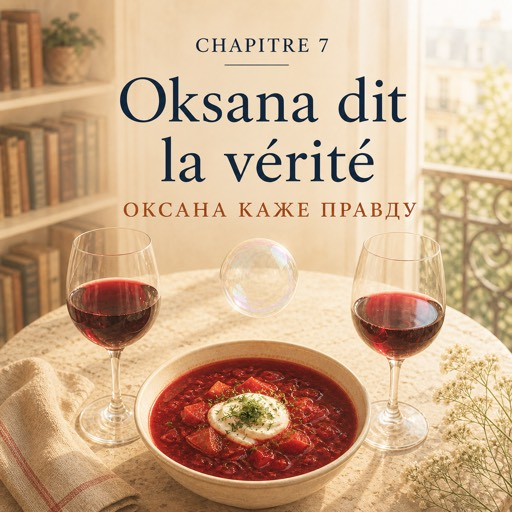

Le mercredi 10 septembre — середа, 10 вересня
Oksana habite dans le vingtième, au quatrième étage, avec un balcon de trente centimètres.
Оксана живе у двадцятому окрузі, на четвертому поверсі, з балконом завширшки тридцять сантиметрів.
Il y a du bortsch sur la table et une bouteille de vin français à côté.
На столі борщ, а поруч пляшка французького вина.
— Alors ? L'entretien ?
— Ну? Як співбесіда?
— « On vous rappellera. »
— «Ми вам передзвонимо».
Natalia sort son carnet et montre la première page.
Наталя дістає блокнот і показує першу сторінку.
— Il a dit ça. Et j'ai oublié tous les mots. Mon français est nul.
— Він сказав оце. А я забула всі слова. Моя французька нікудишня.
Oksana lit la phrase. Puis elle sert le vin, très lentement, et Natalia comprend que quelque chose arrive.
Оксана читає фразу. Потім дуже повільно наливає вино, і Наталя розуміє, що зараз щось буде.
— Nata. Tu veux la vérité ?
— Нато. Хочеш правду?
— Tu dis toujours la vérité.
— Ти завжди кажеш правду.
— Ton français n'est pas nul. Ton français ne sort pas. Ce n'est pas pareil.
— Твоя французька не нікудишня. Твоя французька не виходить назовні. Це різні речі.
— Merci beaucoup.
— Дуже дякую.
— Attends. Réponds-moi. Ces quatre ans, tu travailles où ?
— Стривай. Відповідай. Ці чотири роки ти де працюєш?
— Dans une société ukrainienne. Tes amis ? Ukrainiens. Tes séries, le soir ? En ukrainien.
— В українській конторі. Друзі? Українці. Серіали ввечері? Українською.
— Ton médecin parle russe. Et ta coiffeuse ?
— Лікар говорить російською. А перукарка?
— ... Ukrainienne.
— …Українка.
— Voilà. Tu vis dans une bulle.
— Отож. Ти живеш у бульбашці.
— Elle est confortable, ta bulle. Elle est même très jolie. Mais dedans, personne ne parle français.
— Вона зручна, твоя бульбашка. Вона навіть дуже гарна. Але всередині ніхто не говорить французькою.
Natalia regarde son assiette.
Наталя дивиться у свою тарілку.
— J'évite. Je sais. Je n'ose pas.
— Я уникаю. Я знаю. Я не наважуюсь.
— Tu as honte, mais de quoi ?
— Тобі соромно, але за що?
— De faire des fautes. Devant les gens.
— Робити помилки. При людях.
Oksana pose son verre.
Оксана ставить келих.
— Moi aussi. Tous les jours. Six ans ici, et j'ai encore peur du téléphone.
— Мені теж. Щодня. Шість років тут, і я досі боюся телефону.
— La différence, c'est qu'au bureau, personne ne comprend l'ukrainien. Alors je parle. Je n'ai pas le choix.
— Різниця в тому, що в бюро ніхто не розуміє української. Тому я говорю. У мене немає вибору.
— Donc je me cache.
— Тобто я ховаюся.
— Franchement ? Oui. Et c'est très confortable.
— Чесно? Так. І це дуже зручно.
Natalia ne dit rien pendant un moment.
Наталя якийсь час мовчить.
— Tu as raison.
— Твоя правда.
— Alors écoute mon conseil. Il te faut un travail où tu dois parler.
— Тоді слухай мою пораду. Тобі потрібна робота, де ти мусиш говорити.
— Pas un travail où tu peux parler. Un travail qui t'oblige.
— Не робота, де ти можеш говорити. Робота, яка змушує.
— Et si je ne trouve pas ?
— А якщо я не знайду?
— Essaie, tu verras.
— Спробуй, побачиш.
À la porte, Oksana ajoute :
На порозі Оксана додає:
— Et arrête de dire « mon français est nul ». Cette phrase ne sert à rien.
— І перестань казати «моя французька нікудишня». Ця фраза ні на що не годиться.
— Change une chose. Une seule.
— Зміни одну річ. Одну-єдину.
Dans le métro, Natalia compte encore. Quatre ans.
У метро Наталя знову рахує. Чотири роки.
Elle n'a pas honte. Elle a peur.
Їй не соромно. Їй страшно.
Ce n'est pas la même chose. Et c'est une bonne nouvelle.
Це не те саме. І це добра новина.